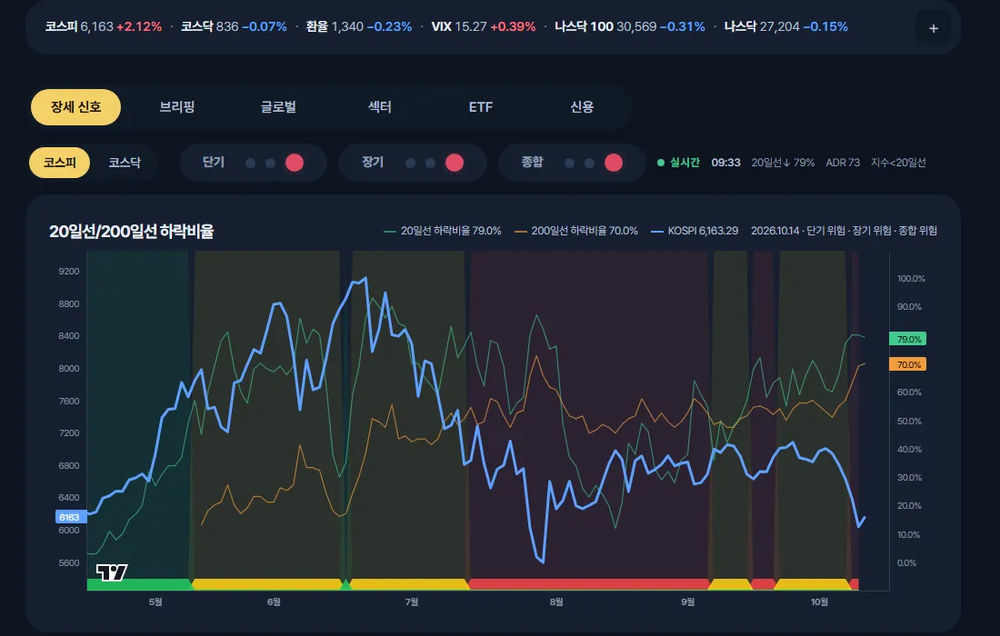
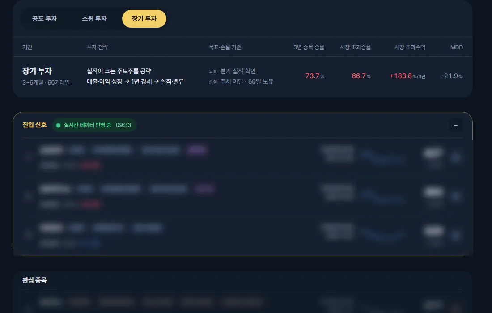
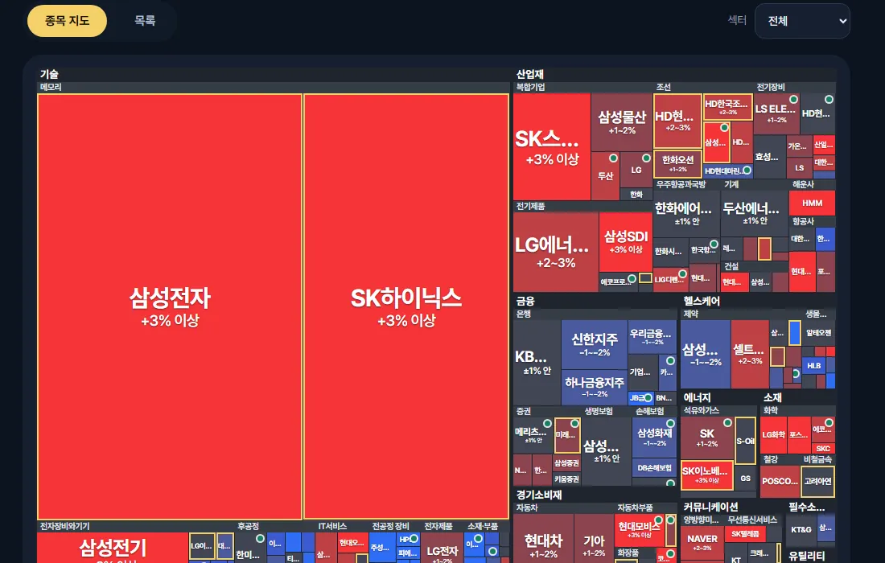
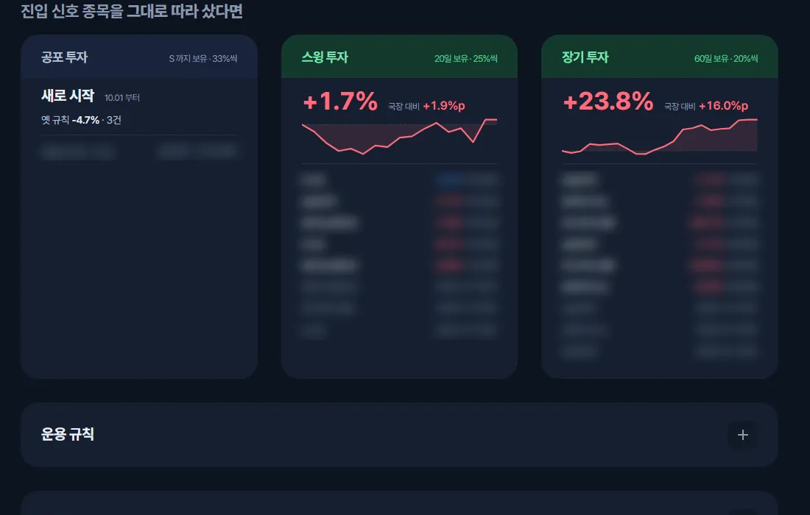
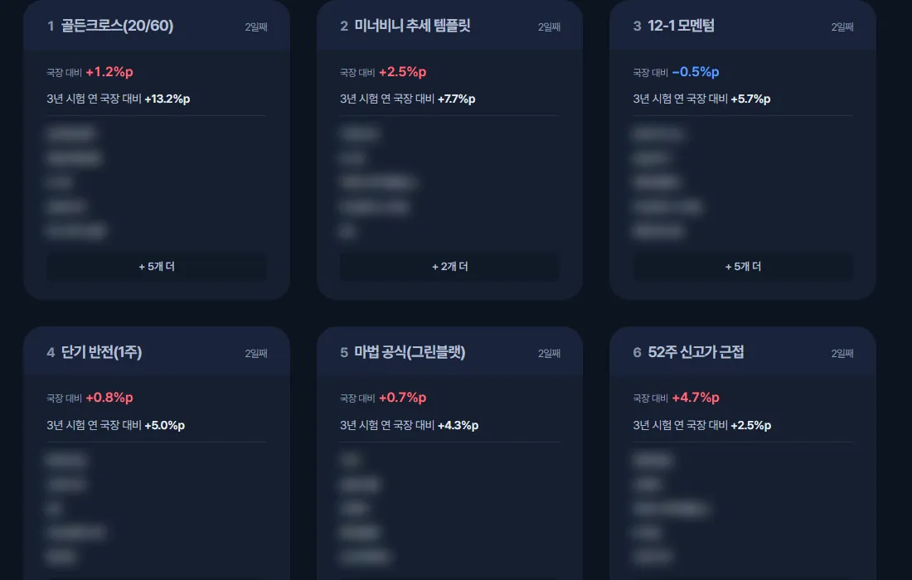
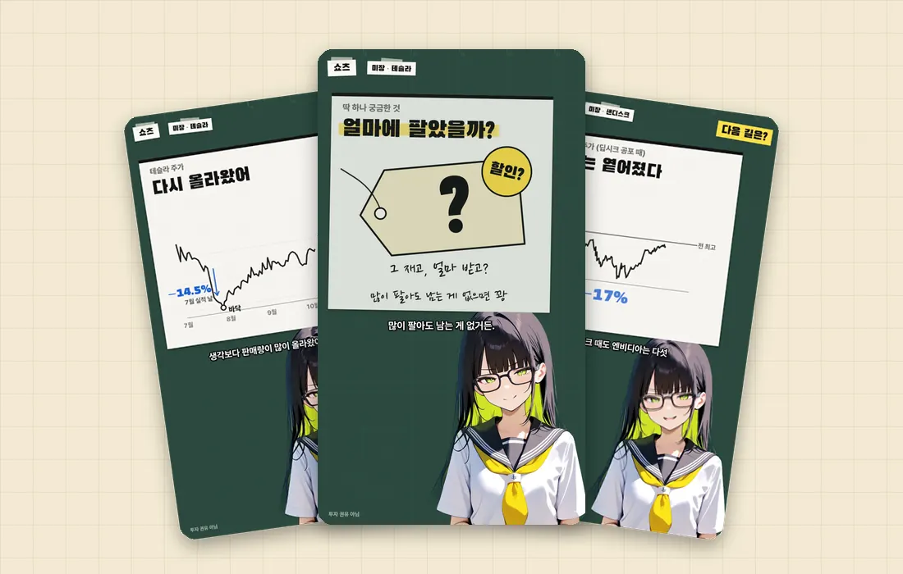
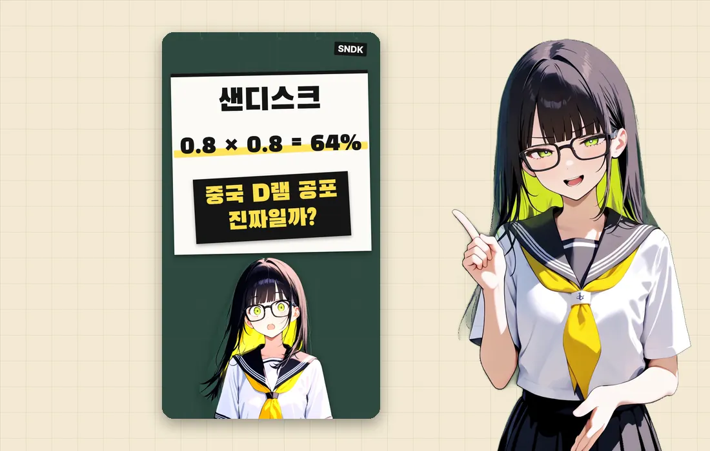
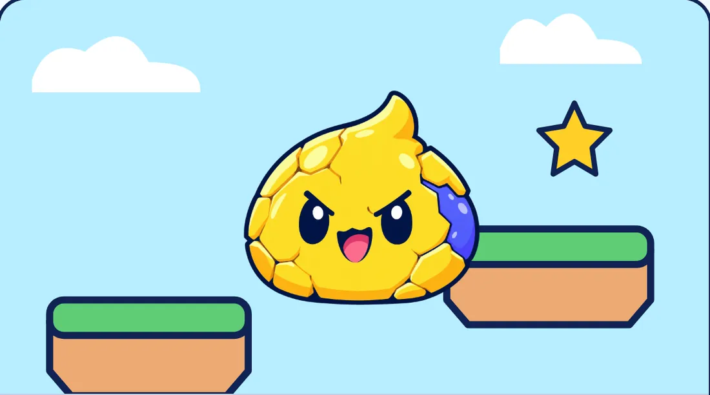
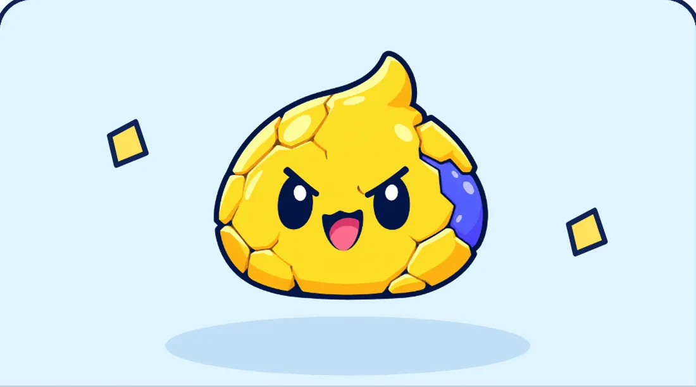
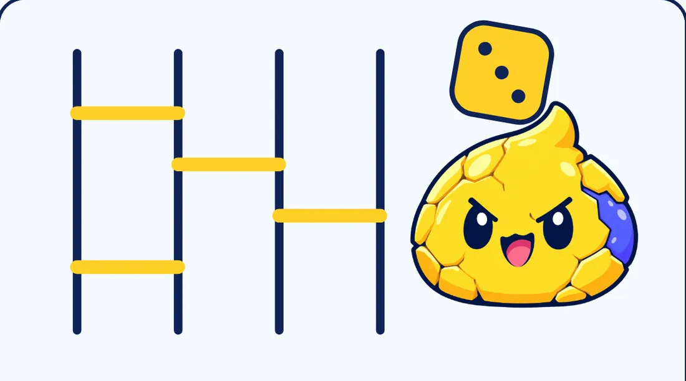

오늘 최고의 국장
국내 주식 시장을 데이터로 읽고, 전략을 시험하고, 그 결과를 매일 기록해요.

01장세 판단
어지러운 장세를 쉽게 파악할 수 있어요.

02투자 전략
3년 자료로 백테스트 한 다양한 전략들이 진입 신호를 찾아내요.

03관리 종목
150개의 종목과 장이 닫혀도 항상 시세를 확인할 수 있어요.

04추종 기록
전략들이 매일매일 추천한 결과를 확인해요.

05실험 연구
세계적으로 알려진 전략을 찾아 우리 자료로 시험해요.
오늘 최고의 미장
미국 주식 연구 후보와 그 이유를 정리해요.
지금 만들고 있어요
미국 주식 연구 후보와 그 이유를 정리하는 사이트예요.
지금은 몇 명만 먼저 보고 있어요.

01쇼츠
종목의 중요 이벤트와 투자 포인트를 빠르게 전해드려요.

02종목편
종목의 흥망성쇠를 보고 다음 길을 같이 짚어보아요.
03강의편
주식 기초와 투자의 기본을 알려 드려요.
왁뿌월드
설치 없이 브라우저에서 바로 하는 무료 게임이에요.

01왁뿌 서바이벌
같은 색 왁스를 채우며 성장해 5스테이지 보스에 도전해요.

02왁뿌 뿌수기
노란 구간에서 손을 떼 왁뿌를 뿌수고, 7색이면 점수 3배예요.

03왁뿌 랜덤 사다리
친구와 주사위로 사다리를 잇고 끊으며 당첨 왁뿌를 가려요.
회사 소개
CREAMCHEESE HOUSE는 20대를 위한 주식 콘텐츠와 게임을 만듭니다.
- 주식 유튜브 채널 시작
- 회사 도메인 creamcheesehouse.com과 브랜드 문구
- 오늘 최고의 국장 새 주소 kr.creamcheesehouse.com 공개
- 지금오늘 최고의 미장 준비 중 · 왁뿌월드 미리보기